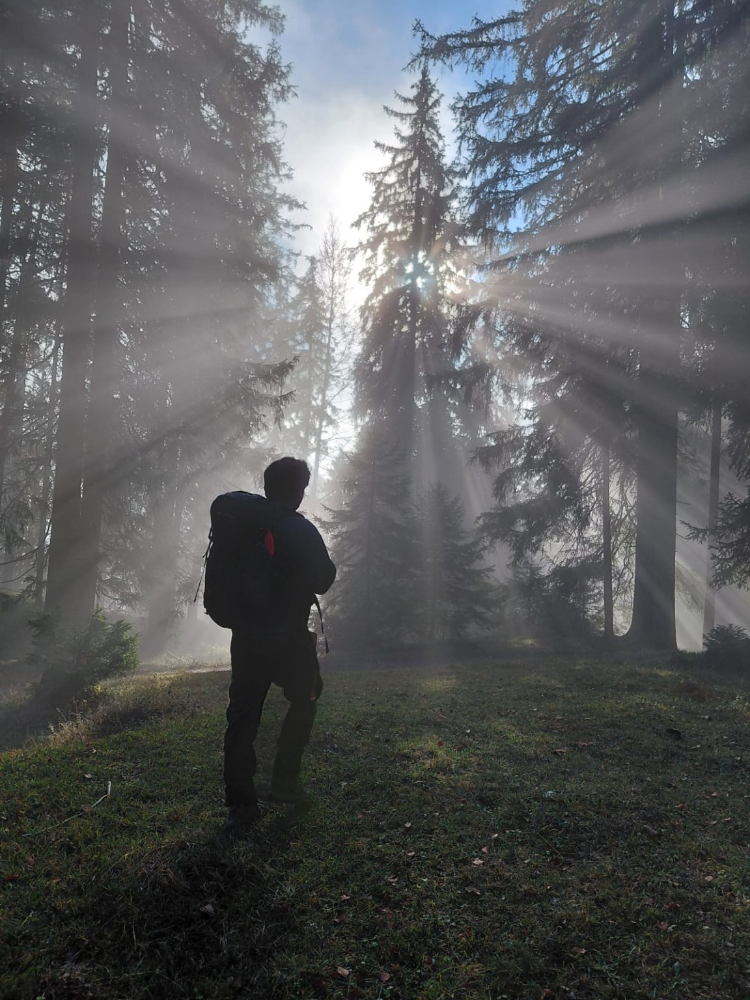

Cumbre 023 de 100
Baumgartenschneid
2026-11-08
Leer la historiaCien cumbres. Cien caminos. Cien historias que merecen ser contadas.
Un desafío personal por los paisajes de Baviera. Caminos que comienzan entre árboles, cumbres que invitan a detenerse y experiencias que merecen ser recordadas.
Descubre las historias
Cien montañas en un año. Una idea sencilla que se convierte en una colección de experiencias, fotografías, encuentros y recuerdos.
Algunas caminatas serán tranquilas. Otras exigirán un poco más. Habrá días de sol, caminos entre nubes y momentos en los que el paisaje será suficiente compañía.
Este diario reúne las historias detrás de cada ascenso. No pretende ser un catálogo de rutas ni una colección de récords. Es una forma de compartir lo que se descubre caminando.
Porque la montaña no siempre necesita muchas palabras.
Cada historia conserva el número correspondiente al orden real en que alcancé la cumbre.
Caminar sin prisas, conversar cuando apetezca o simplemente disfrutar del silencio. Descubre nuestras experiencias en los Prealpes bávaros, con grupos pequeños y tiempo para disfrutar de cada paisaje.
Descubrir las excursiones